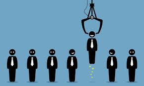

Что вы видите, когда смотрите на страничку кандидата? Образование? Опыт работы? Возраст? Что если я скажу что все это вторично?
Давайте по порядку. Когда Вы получаете задание закрыть вокансию, то вы думаете: "Первое, что хотел бы получить заказчик это надежного работника. Что будет указывать на надежность работника?" Как психолог, я бы начал рассматривать надежность работника на основе его мотивов и возможностей заказчика удолветворить эти мотивы. Согласитесь, что если человека все устраивает, зачем ему искать другую работу? Вторым критерием является уровень притязаний и общие способности челвоека, такие как: способность к комуникациях, властность, криативность, темперамент, интеллект, способность работать в коллективе и многое другое. На этот вопрос ответит фото кандидата, а именно: форма головы, лицо и его особенности строения, форма и размер тела. Трейтий критерий - адекватность соискателя. У всех людей есть особенности поведения и если закзачику нужен молчаливый трудоголик, а кандидат тусовщик и блогер, то вероятность, что заказчику он не подойдет, повышается. Но как выявить психические отклонение?
 Обычно психическими отклонениями считается несоответствие поведения, тем качествам личности, которые у человека заложены природно. Такие несоответствие яляются показателем наличия высоких притязаний, но к сожалению природу обмануть не так то и просто. Действительно, можно натренировать некоторые качества личности, но далеко впереди будут те, кто обладает природными сопобностями этих качеств. Рассмотрим простой пример, где рассмотрим кандидата по одному критерию. У вас есть вокансия начальника отдела закупок, зарплата средняя. Кандидат: полный мужчина 36 лет, экономист, магистреская диссертация. На собеседовании произвел впечатление специалиста высокого уровня. Можно ли брать его на эту должность? Нет. Конституция тела (пикническая) указывает на то, что человек имеет проблемы с контролем уловлетворения своих потребностей. Это как пустить кошку на фабрику по производству валерьяны. Это значит, что даже если человек обязательный и аккуратный, то это заслуга некоторого мотива (идеи), которая важнее его потребностей тела на данный момент. Как только цель будет достигнута, то произойдет смещение мотивов в пользу природных. Если Вы не знаете идею из-за которой поведение чевлоека именно такое, то контролировать сотрудника будет невозможно и его действия могут быть связаными с рисками потерь времени и денег.
Кто мог бы подойти на эту вокансию? Вероятнее всего, я бы рекомендовал человека с атлетическим или астеническим типом тела. Людям этих типов свойственна природная исполнительность, высокая производительность труда (до истощения). Мотивы людей этого типа чаще направлены на внешние объекты или ментальные чувства.
В тренинге "Визуальная психодиагностика" вы изучите методику идентификации будущего работника по признакам внешности (чертам лица и тела). Методика представляет собой визуальное определение предрасположенностей человека, образующих психологический тип человека, по их морфологическим проявлениям . Основу методики составляют полученные в психологическом исследовании данные – выявленные статистически достоверные ассоциации и внешние признаки. Освоенная техника определения психологического типа человека позволяет успешно решать многие повседневные и профессиональные задачи HR-специалиста, во время собеседования.